Research
Expectations and forecasting
How firms and people form expectations, and how to pool forecasts.
5-
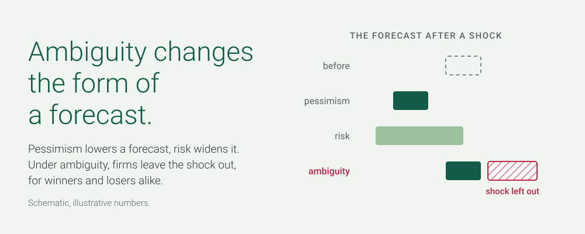
Draft2026Video
Ambiguity, Pessimism, and Firm Decisions: Evidence from Corporate Forecasts around Large Shocks
When firms cannot put probabilities on the consequences of a shock, they may stop quantifying their forecasts instead of lowering them. A model, and a test on US annual reports around COVID-19, the war in Ukraine and the 2025 tariffs, contrasted with German firms that must publish forecasts by law.
-

Draft2026Video
Whom to Trust, and When? Aggregating Probability Forecasts in Small Crowds with Short Track Records
Should organizations weight forecasters by their track record or take the simple average? A model and 5,898 forecasts by 177 forecasters show that with small crowds and short records, the simple average is hard to beat.
-
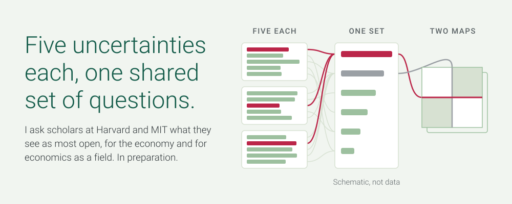
In preparation2026
The Cambridge Questions: Critical Uncertainties for the Economy and for Economics
What are the most crucial open questions for the economy and for economics as a field? I name my own five uncertainties for each, then I will ask scholars at Harvard and MIT to name theirs, one to one. From these lists one set of questions takes shape, worded together.
-
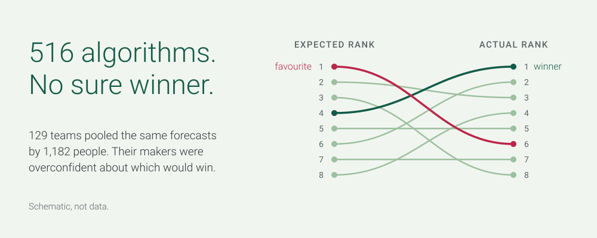
Working paper2026Video
A Many-Designs Study of 516 Algorithms Challenges the Predictability of Wisdom of the Crowd Forecast Aggregation
129 research teams submitted 516 algorithms to pool the same forecasts. Hardly any approach beat the others in a predictable way.
-
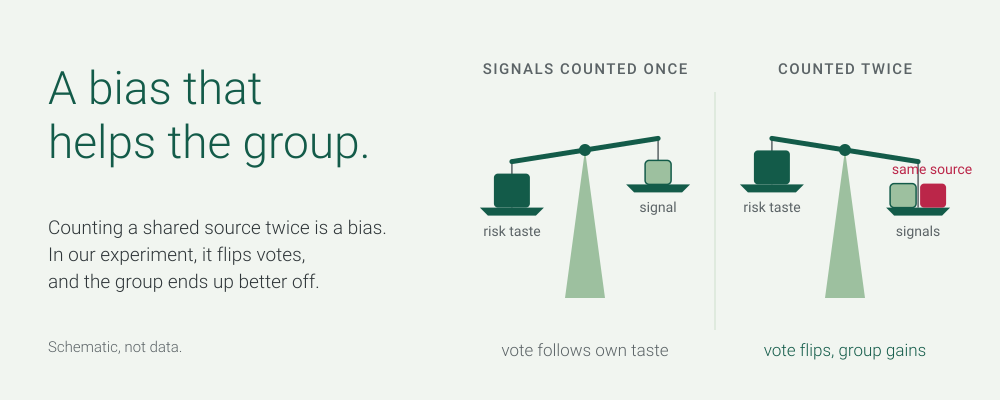
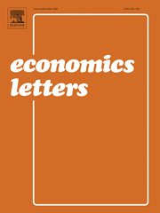
Journal article2021Video
Correlation Neglect in Voting Decisions: An Experiment
An experiment on whether voters account for the correlation between the pieces of information they receive.
Honesty and cooperation in groups
Experiments on lying, reporting and talking in groups.
5-
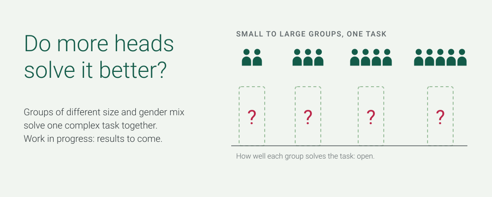
Draft2025Video
Groups Performing Complex Tasks: The Role of Group Size and Group Composition
How the size of a group and its gender mix shape how well it solves a complex task together.
-
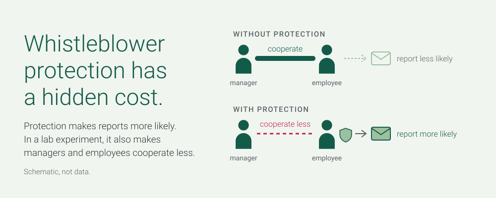
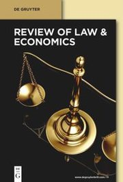
Journal article2025Video
The Hidden Costs of Whistleblower Protection
A lab experiment on whether protecting whistleblowers, by making reports more likely, also reduces cooperation between managers and employees.
-
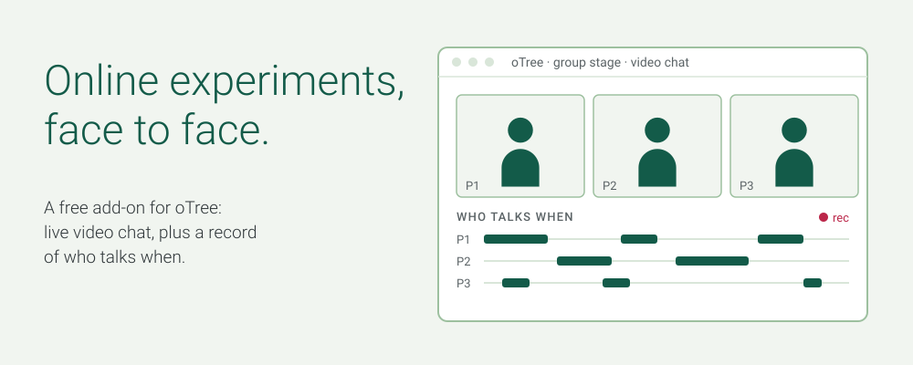
Journal article2025Open accessVideo
chaTree: An oTree Addon Allowing Face-to-Face Communication in Online Group Experiments
A free add-on that brings live video chat to oTree, so that participants in online group experiments can talk face to face.
-
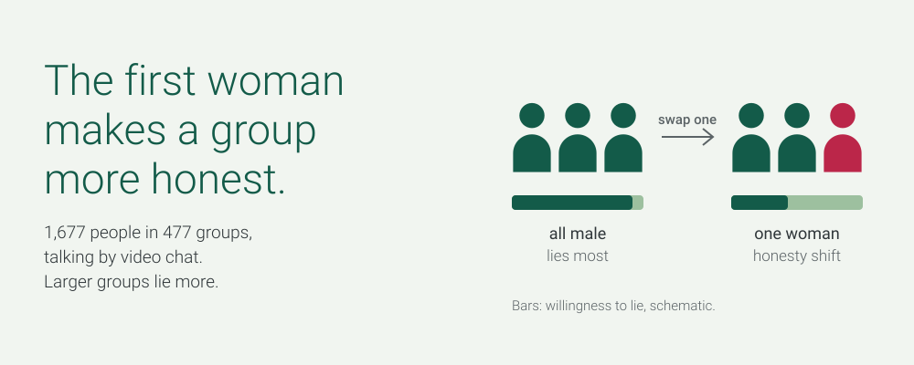
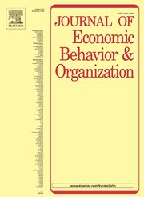
Working paper2024R&R, JEBOVideo
Honesty of Groups: Effects of Size and Gender Composition
An online experiment with 1,677 people in 447 groups who talk by video chat. Larger groups lie more, all-male groups lie most, and a single woman already makes a group more honest.
-
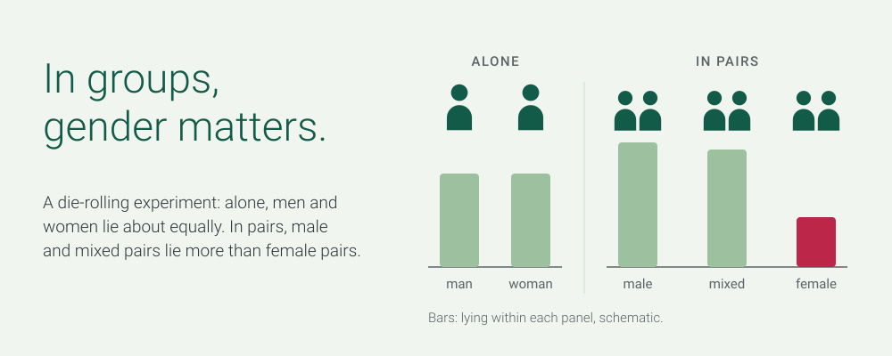
Journal article2015Video
Gender Differences in Honesty: Groups versus Individuals
An experiment that compares the honesty of groups and individuals, and of men and women.
Measuring performance
What counts as performance, and who contributes to it.
3-
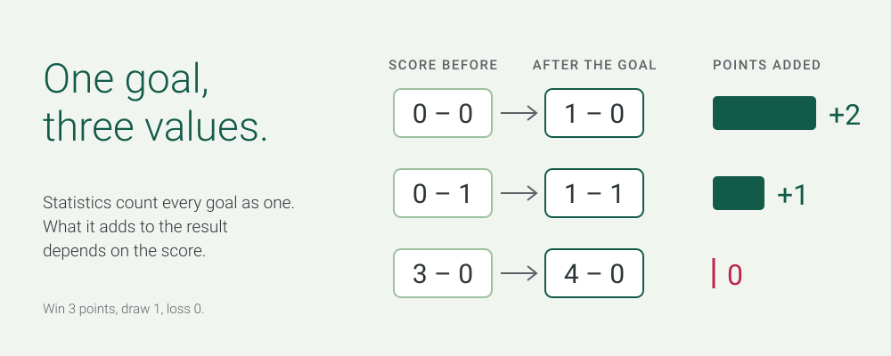
Draft2026Video
Counting What Counts: Misaligned Performance Measures, State-Dependent Value, and the Prediction of Future Performance
Adding up output misleads when a unit of output is worth more in some states than in others. A framework for aligned performance measures, tested on football data; the first of three papers.
-
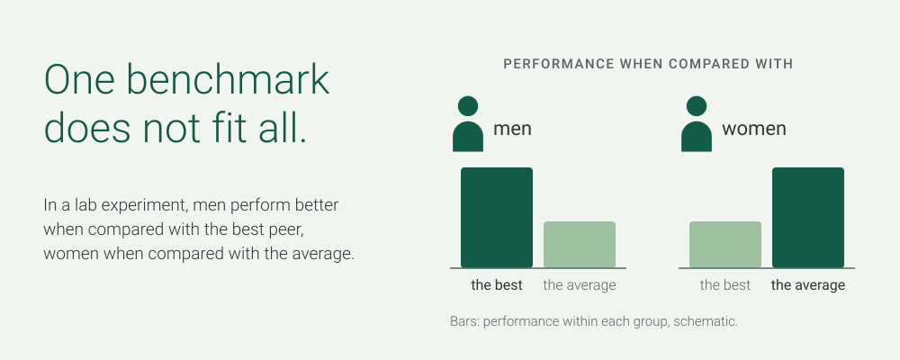

Journal article2021Video
Peer Effects under Different Relative Performance Feedback and Grouping Procedures
A lab experiment on peer groups and feedback: who gains from comparing with the best, and who from comparing with the average?
-
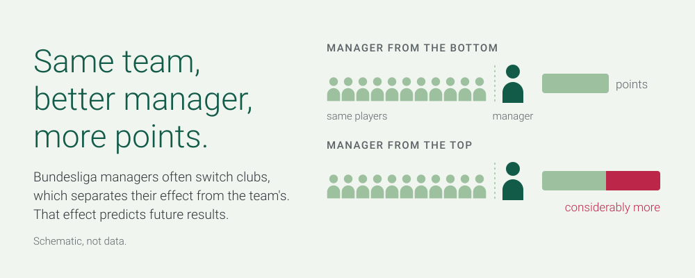
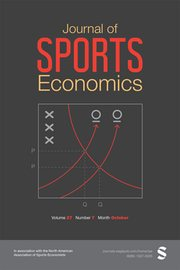
Journal article2018Video
The Contribution of Managers to Organizational Success: Evidence from German Soccer
Bundesliga data, using the frequent moves of managers between teams: how much does the manager matter?
Organizations, management and work
How management and AI shape public bodies, firms and jobs.
4-
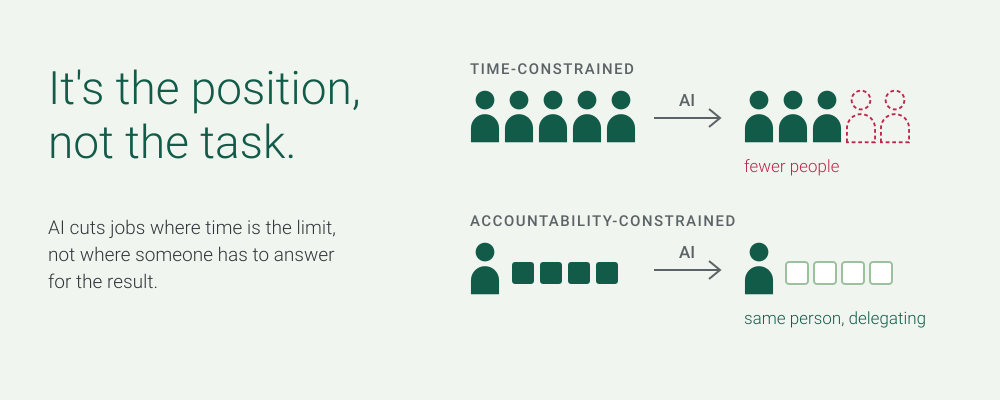
Draft2026Video
Positions, Not Tasks: AI, Accountability and the Number of Jobs
A job is a position that carries accountability, not a bundle of tasks. A simple model predicts where AI cuts headcount and where it only changes how the work is done.
-
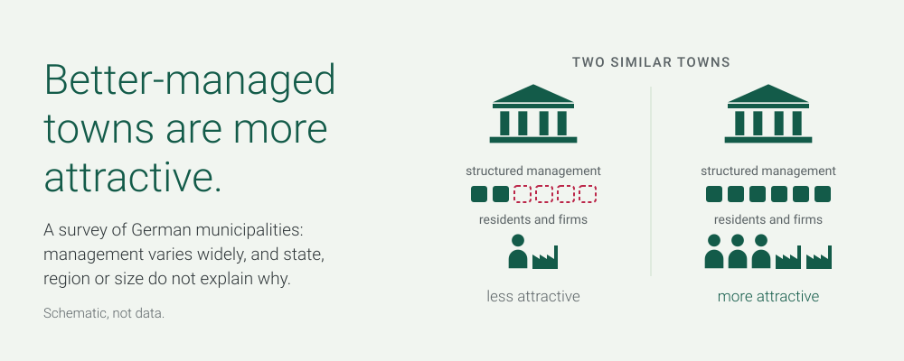
Working paper2026Video
Management and Performance in the Public Sector: Evidence from German Municipalities
A management survey of 600 German town halls. How they are run varies widely, even within the same state, and those with more structured management perform better, from finances and attractiveness to online services.
-

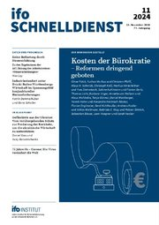
Article2024Video
Evidenz zur Verwendung moderner Managementmethoden in deutschen Gemeinden
In German, for policy-makers: the survey of German municipalities behind “Management and Performance in the Public Sector”, in the symposium “Kosten der Bürokratie – Reformen dringend geboten”.
-

Dissertation2019Video
Essays in Organizational Economics
PhD thesis, University of Hamburg; advisor: Gerd Muehlheusser. Four empirical essays in organizational economics, all since published: on honesty in groups, on managers, on performance feedback and on whistleblowing.
Background
- 2026–27
Affiliate, Nieman Foundation at Harvard University
- 2023–
Founder and Managing Director, arq decisions
- 2022–24
Assistant Professor (equivalent), University of Hamburg
- 2019–22
Postdoctoral researcher, University of Hamburg; DFG project on decision-making in groups
- 2014–19
PhD in Economics, University of Hamburg; advisor: Gerd Muehlheusser
- 2018
Visiting researcher, University of Melbourne; host: John de New
- 2011–13
M.Sc. in Economics, University of Hamburg; visiting student at the University of Edinburgh in 2013
- 2008–11
B.Sc. in Economics, University of Hamburg